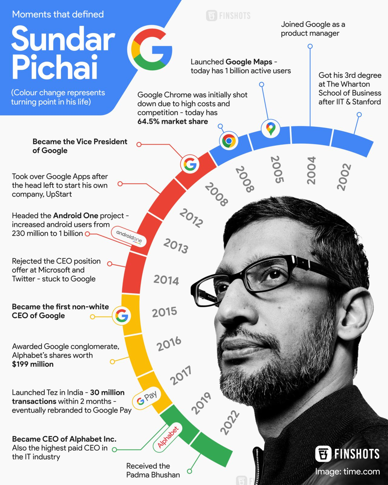
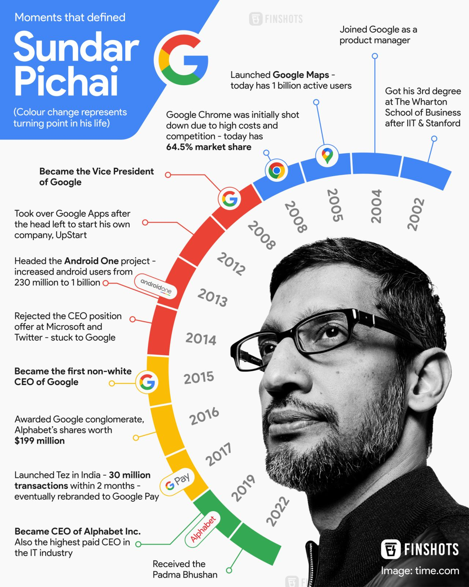

Sundar Pichai
CEO of Google
About Sundar Pichai
Pichai is an Indian-American business executive and the CEO of Google. He was born on July 12, 1972, in Chennai, India. Pichai joined Google in 2004 and played a key role in the development of products such as Google Chrome and Chrome OS. He later became the CEO of Google in August 2015.
AWARDS
Pichai received the Padma Bhushan in the category of Trade and Industry from the Government of India, the country's third-highest civilian award.
Achievements
- Led the development of the Chrome browser and Chrome OS.
- Helped launch the Google Chromebook.
- Became the CEO of Google in 2015.
Notable Quotes
"You might fail a few times, but that's Ok. You end up doing something worthwhile which you learn a great deal from." - Sundar Pichai
career
Pichai has worked in various engineering firms, Applied Materials fields,and management consulting company McKinsey & Company. He joined the search engine firm in 2004, and he was in the department of innovation efforts
and product management for search engine clients. They include Google maps, google drive, Google chrome, and Operating System. He was also overseeing the work of Gmail and Google Maps and various other development projects.
Sundar presented Chrome Operating System in November 2009 and later as Chromebook launched for trial and testing purposes in 2011.
Pichai also introduced an open-source new video codec, VP8, made by Google, and later they brought it into a new shape called WebM.also brought Android software into Google's list of products, and he was looking over all the management.It was earlier controlled by Andy Rubin. He later succeeded as director of software called Jive Software from April 2011 to 30 July 2013.
Pichai assumed the position of CEO of Google on 10 August 2015. Before being appointed as CEO, he worked as product chief.
Sundar Pichai was also in the race for Microsoft's CEO, but later it went to the Satya Nadell.
Pichai was severely criticized for his actions when he suspended an employee. The employee has written a 10-page manifesto in which he criticized company policies.
ABOUT
His full name is Pichai Sunadarajan and is commonly known as Sundar Pichai. He was born in India and later took citizenship in the United States. He is now at one of the powerful Global Multinational Companies called Google, serving as Chief Executive Officer in the company. He is also CEO of Alphabet.
Alphabet is a organization of Google. He was born on 10 June 1972, and he is 49 years old. He is from Tamil Nadu and was born in Chennai, then called Madras. His father's name is Reghunatha Pichai, an engineer by profession, and his mother's name is Lakshmi, stenographer by profession.
Pichai's father was working in an English firm, and his father also owned a manufacturing plant of the electrical component. He had lived in a two-room apartment in a place called Ashok Nagar, which is situated in Chennai.
He comes from a Hindu family, and his childhood has been nurtured in Hindu traditions.
Google CEO completed his primary and secondary education from Jawahar Vidyalaya Senior Secondary School, Ashok Nagar. After that,
he did his Class 12 from Vana Vani School at IIT Madras.
He did his bachelor's in metallurgical engineering from the Indian Institute of Technology, Kharagpur. He has been awarded a Silver medal for metallurgical engineering by the Indian Institute of Technology, Kharagpur.
He also has M.S.degree (Material Science), and he has obtained it from Stanford University.
Later he went on to pursue an MBA from the Wharton School of the University of Pennsylvania. got Palmer Scholar in Wharton School of the University of Pennsylvania and Sibel Scholar from Stanford University.
He is married to Anjali Pichai, who works as Business Operation Manager in Intuit- A Software Company. It was a love marriage, and he dated her in India. They have children named Kavya Pichai and Lakshmi Pichai. His annual salary is 20 lakh per annum.
According to the Media reports, Pichai's assets stand at $600 million,and earnings are $ 1 billion every year, and this includes a yearly bonus.
He became interested in technology due to his father. His childhood dream was to be a cricketer, and he was a fan of Sunil Gavaskar.
He admires football team Fanclub Barcelona and the Football player Lionel Messi. Pichai trained himself to maintain stability in any kind of politics and sort of nuisance. He also applied this technique to his team. Microsoft offered him to join their company, and some reports suggest they offered him $50 million.